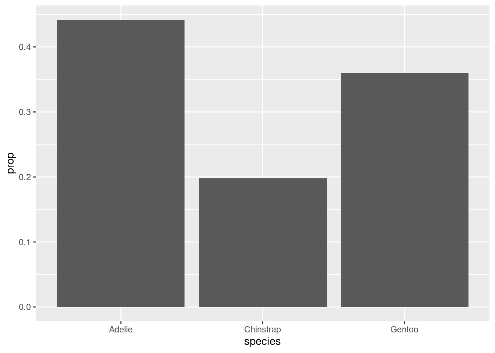
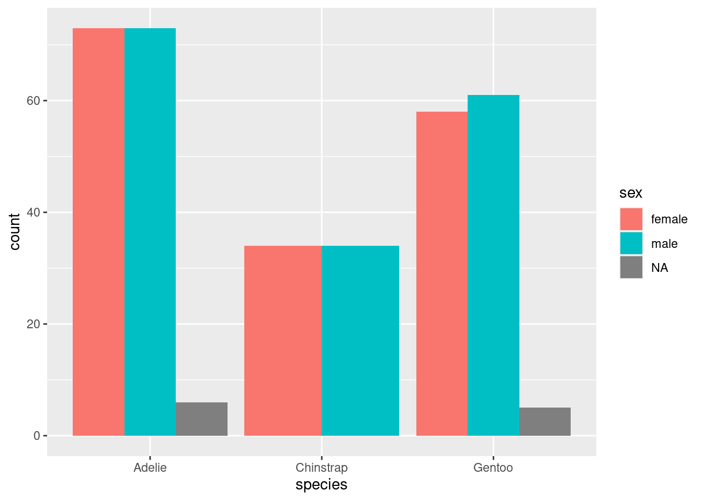

In this chapter, we’ll learn about categorical data and how to summarize it using tables and graphs.
3.1.1 Install new packages
If you are using RStudio Workbench, you do not need to install any packages. (Any packages you need should already be installed by the server administrators.)
If you are using R and RStudio on your own machine instead of accessing RStudio Workbench through a browser, you’ll need to type the following command at the Console:
install.packages("janitor")
3.1.2 Download the R notebook file
Check the upper-right corner in RStudio to make sure you’re in your intro_stats project. Then click on the following link to download this chapter as an R notebook file (.Rmd).
Once the file is downloaded, move it to your project folder in RStudio and open it there.
3.1.3 Restart R and run all chunks
In RStudio, in the toolbar above this document, find the “Run” drop-down menu and select “Restart R and Run All Chunks.”
This does two important things:
R will restart. This will clear out the Global Environment and provide a fresh session for this new assignment. None of the clutter from previous chapters will be there to mess up your work in this chapter.
All the code chunks in this document will run so that you can see the output as you scroll past it. This saves you some effort in having to click the little green “Run” button in each code chunk as you come across it. (Also, if you forget to run one, that could cause errors later on, so this way, all the variables you need will be in the Global Environment for when they’re needed later.) You will still need to click the green arrow for new code chunks that you create, of course.
At the end of the assignment, you will “Restart R and Run All Chunks” once again to make sure that everything works smoothly and there are no lingering errors.
3.1.4 Load packages
We load the tidyverse package since it also loads the ggplot2 package that we’ll use throughout the course to make graphs. It also loads several other packages, for example, one called dplyr to give us a command called mutate, and another called forcats to give us as_factor. (These will all be explained later.) The janitor package gives us the tabyl command for creating nice tables. Finally, We load the palmerpenguins package to work with the penguin data.
library(tidyverse)
── Attaching core tidyverse packages ──────────────────────── tidyverse 2.0.0 ──
✔ dplyr 1.1.2 ✔ readr 2.1.4
✔ forcats 1.0.0 ✔ stringr 1.5.0
✔ ggplot2 3.4.2 ✔ tibble 3.2.1
✔ lubridate 1.9.2 ✔ tidyr 1.3.0
✔ purrr 1.0.1
── Conflicts ────────────────────────────────────────── tidyverse_conflicts() ──
✖ dplyr::filter() masks stats::filter()
✖ dplyr::lag() masks stats::lag()
ℹ Use the conflicted package (<http://conflicted.r-lib.org/>) to force all conflicts to become errors
library(janitor)
Attaching package: 'janitor'
The following objects are masked from 'package:stats':
chisq.test, fisher.test
library(palmerpenguins)
Warning: package 'palmerpenguins' was built under R version 4.3.1
3.2 Categorical data
Data comes in different types depending on what is being measured. When people think of “data”, they often imagine numerical data, consisting of numbers. But there are other kinds of data as well.
In this chapter, we focus on categorical data that groups observations into categories.
For example, if we record the species of a penguin, that is not a number. It’s a word that classifies that penguin into one of a finite number of types. Whenever you see words in a data set, there’s a good chance that you’re looking at categorical data.
Even “numbers” can sometimes represent categorical data. For example, suppose in a survey there is a Yes/No question. Instead of seeing the words “Yes” or “No”, though, you might see a data set with ones and zeros, where 1 = Yes and 0 = No. The presence of numbers does not automatically make that data numerical. In fact, the data is categorical. Yes and No are categories that sort the survey respondents into two groups based on their responses to a certain question.
What about ZIP codes? They are recorded as numbers, and unlike the Yes/No example above, those numbers aren’t just substitutes for words. Nevertheless, ZIP codes are categorical. They sort addresses into a finite number of groups based on geographic proximity.
Another way to think of it is this: can the numerical values of ZIP codes be treated as numbers in any meaningful way? Can you take a sum or an average of ZIP codes? Sure, technically a computer can add up or average a set of ZIP codes, but would the result be a meaningful number? Since the answer is “no” we cannot think of ZIP codes as numbers, even though they are recorded that way.
Exercise 1
Think of another type of data that would be recorded using numbers but should be thought of as categorical data.
Please write up your answer here.
3.3 Factor variables
R uses the term “factor variable” to refer to a categorical variable. Look at the structure of the penguins data below.
str(penguins)
tibble [344 × 8] (S3: tbl_df/tbl/data.frame)
$ species : Factor w/ 3 levels "Adelie","Chinstrap",..: 1 1 1 1 1 1 1 1 1 1 ...
$ island : Factor w/ 3 levels "Biscoe","Dream",..: 3 3 3 3 3 3 3 3 3 3 ...
$ bill_length_mm : num [1:344] 39.1 39.5 40.3 NA 36.7 39.3 38.9 39.2 34.1 42 ...
$ bill_depth_mm : num [1:344] 18.7 17.4 18 NA 19.3 20.6 17.8 19.6 18.1 20.2 ...
$ flipper_length_mm: int [1:344] 181 186 195 NA 193 190 181 195 193 190 ...
$ body_mass_g : int [1:344] 3750 3800 3250 NA 3450 3650 3625 4675 3475 4250 ...
$ sex : Factor w/ 2 levels "female","male": 2 1 1 NA 1 2 1 2 NA NA ...
$ year : int [1:344] 2007 2007 2007 2007 2007 2007 2007 2007 2007 2007 ...
The categorical variables species, island, and sex are coded correctly as factor variables.
The tidyverse package offers a function called glimpse that effectively does the same thing as str. We’ll use glimpse throughout the rest of the course.
Look at the output of str versus glimpse above. Write down any advantages or disadvantages you see using one versus the other. (You may also want to check the help file for the two commands to see if they offer any clues as to why you might use one over the other.)
Please write up your answer here.
Your data set may already come with its variables coded correctly as factor variables, but often they are not. As described above, numbers are often used to represent categories, so R may think that those variables represent numerical data. Later, we’ll see an example of this and learn how to handle categorical variables that are not coded as factor variables in R.
3.4 Summarizing one categorical variable
If you need to summarize a single categorical variable, a frequency table usually suffices. This is simply a table that counts up all the instances of each category. The word “frequency” is synonymous here with the word “count”.
We can use the table command:
table(penguins$species)
Adelie Chinstrap Gentoo
152 68 124
Recall that the dollar sign means to grab the variable species from the tibble penguins.
You can also generate a relative frequency table which is a table that uses proportions or percentages instead of counts.
NOTE: For purposes of this course, we’re going to be very careful about the terms proportion and percentage. For us, a proportion will always be a number between 0 and 1 whereas a percentage will be between 0 and 100. Calculating a percentage is the same as multiplying a proportion by 100.
The table command stops being convenient if you want proportions instead of counts. Instead, we will use the tabyl command from the janitor package that was loaded near the top of the chapter. The syntax for this command is a little different. The tibble goes first, followed by a comma, followed by the variable you want to summarize:
tabyl(penguins, species)
Now you get both counts and proportions. Note that in the output above, it’s a little misleading to call the last column “percent”. These are actually proportions, and we would have to multiply by 100 to get percentages.
It’s usually nice to have the column totals. We can achieve that by using an adorn function to get them as follows:
tabyl(penguins, species) %>%adorn_totals()
We’ll always include the totals at the bottom.
If you really want percentages, we can use a different adorn function:
The syntax above looks a little confusing with the unusual %>% symbols everywhere. You will learn more about that weird set of symbols in a later chapter. For now, you can just copy and paste this code and make any necessary changes to the tibble and/or variables names as needed.
Exercise 3(a)
Use the tabyl command as above to create a frequency table for the sex of the penguins. Include the column totals at the bottom. (You will also get a relative frequency table for free.)
# Add code here to create a frequency table for sex
Exercise 3(b)
In the table for sex that you just created, what does the row labeled <NA> mean?
Please write up your answer here.
Exercise 3(c)
Now create a relative frequency table for sex that reports percentages and not proportions (still including the column totals at the bottom).
# Add code here that reports percentages instead of proportions
Exercise 3(d)
In the previous tables, what is the difference between percent and valid_percent? Why are there two different sets of percentages being computed?
Please write up your answer here.
3.5 Graphing one categorical variable
When asked, “What type of graph should I use when graphing a single categorical variable?” the simple answer is “None.” If you do need to summarize a categorical variable, a frequency table usually suffices.
If you really, really want a graph, the standard type is a bar chart. But before we can create one, we need to start learning about the very important tool we will use throughout the course for graphing. It’s called ggplot and it’s part of a package called ggplot2.1
We don’t have to load the ggplot2 package explicitly because it got loaded alongside a number of other packages when we called library(tidyverse) early on in the chapter.
3.5.1 ggplot
The ggplot command is an all-purpose graphing utility. It uses a graphing philosophy derived from a book called The Grammar of Graphics by Leland Wilkinson. The basic idea is that each variable you want to plot should correspond to some element or “aesthetic” component of the graph. The obvious places for data to go are along the y-axis or x-axis, but other aesthetics are important too; graphs often use color, shape, or size to illustrate different aspects of data. Once these aesthetics have been defined, we will add “layers” to the graph. These are objects like dots, boxes, lines, or bars that dictate the type of graph we want to see.
In an introductory course, we won’t get too fancy with these graphs. But be aware that there’s a whole field of data visualization that studies clear and interesting ways to understand data graphically.
It will be easier to explain the ggplot syntax in the context of specific graph types, so let’s create a bar chart for species.
ggplot(penguins, aes(x = species)) +geom_bar()
We’ll walk through this syntax step by step.
The first argument of the ggplot command is the name of the tibble, in this case, penguins.
Next we define the aesthetics using aes and parentheses. Inside the parentheses, we assign any variables we want to plot to aesthetics of the graph. For this analysis, we are only interested in the variable species and for a bar chart, the categorical variable typically goes on the x-axis. That’s why it says x = species inside the aes argument.
Finally, ggplot needs to know what kind of graph we want. Graph types are called “geoms” in the ggplot world, and geom_bar() tells ggplot to add a “bar chart layer”. Adding a layer is accomplished by literally typing a plus sign.
This can be modified somewhat to give proportions (relative frequencies) on the y-axis instead of counts. Unfortunately, the ggplot syntax is not very transparent here. My recommendation is to copy and paste the code below if you need to make a relative frequency bar chart in the future, making the necessary changes to the tibble and variable names, of course.
ggplot(penguins, aes(x = species, y = ..prop.., group =1)) +geom_bar()
Warning: The dot-dot notation (`..prop..`) was deprecated in ggplot2 3.4.0.
ℹ Please use `after_stat(prop)` instead.

These bar charts are the graphical analogues of a frequency table and a relative frequency table, respectively.
Exercise 4
In a sentence or two at most, describe the distribution of species in this data set.
A table summarizing two categorical variables is called a contingency table (or pivot table, or cross-tabulation, or probably several other terms as well).
For example, we might pose the following question: is the distribution of sex among penguins in our data more or less balanced across the three species?
When we work with two variables, typically we think of one variable as response and the other as predictor. The response variable is usually the variable of main interest. A predictor variable is another attribute that might predict or explain more about the response variable.
For example, our question is concerned with the sex distribution of penguins. We could create a relative frequency table of sex alone to see if male and female penguins are balanced in the data. In fact, you did that very thing above and saw that, indeed, there were roughly equal numbers of male and female penguins. But is that still true when we divide up the data into the three groups representing the separate species?
Two variables are called associated when there is a relationship between them. For example, if sex and species were associated, then the distribution of sex would change depending on the species. Maybe one species of penguin had more females and another had fewer females. Our prediction of the sex distribution would change based on the value of the predictor variable species.
On the other hand, two variables that are not associated are called independent. Independent variables are not related. If the sex distribution were the same across all species, then knowledge of the species would not change our predictions about the sex of a penguin. It wouldn’t matter because there was no relationship between sex and species.
Most research questions that involve two or more variables are fundamentally questions of whether a response variable is associated with one or more predictor variables, or whether they are independent.
Let’s check the contingency table. The tabyl command will place the first variable listed across the rows and the second one listed down the columns. Since we always include column totals, we want the predictor variable to be the column variable so we can see how the predictor groups are distributed in the data. Always list the response variable first.
tabyl(penguins, sex, species) %>%adorn_totals()
Each column is a group, and our question is whether the distribution of sexes in each column is similar.
The last row of totals is called the marginal distribution (because it sits in the “margin” of the contingency table). It is equivalent to a frequency table for species.
3.6.0.0.1 Exercise 5
Counts can be misleading. For example, there are 73 female Adelie penguins, but only 34 female Chinstrap penguins. Does that mean that Adelie penguins are more likely to be female than Chinstrap penguins? Why or why not?
Please write up your answer here.
A more fair way to compare across columns is to create relative frequencies. We can do this with a slightly different adorn command. The following code says that we want to compute column proportions (yes, I know the command is called adorn_percentages, but these are proportions):
Now we can see that each column adds up to 100%. In other words, each species is now on equal footing, and only the distribution of sexes within each group matters.
3.6.0.0.2 Exercise 6(a)
What percentage of Adelie penguins are male? What percentage of Chinstrap penguins are male? What percentage of Gentoo penguins are male?
Please write up your answer here.
3.6.0.0.3 Exercise 6(b)
Does sex appear to be associated with species for the penguins in this data set? Or are these variables independent?
Please write up your answer here.
The islands of Antarctica on which the penguins were observed and measured are recorded in the variable called island. Is the distribution of the three species of penguin the same (or similar) on the three islands?
3.6.0.0.4 Exercise 7(a)
Choosing which variables play the roles of response and predictor can be tricky. For the question above, with species and island, which is response and which is predictor?
One way to think about this is to ask the following two questions and see which one is closer to the question asked:
Given information about the species, are you interested in which island the penguin lives on? If so, species is a predictor and island is response. (You are using species to predict island.)
Given information about the island, are you interested in the species of the penguin? If so, island is a predictor and species is response. (You are using island to predict species.)
Please write up your answer here.
3.6.0.0.5 Exercise 7(b)
Create a contingency table with percentages. List species first, followed by island. (Hey, that’s hint in case you need to go back and change your answer to part (a).)
# Add code here to create a contingency table with percentages.
3.6.0.0.6 Exercise 7(c)
Finally, comment on the association or independence of the two variables.
Please write up your answer here.
3.7 Graphing two categorical variables
A somewhat effective way to display two categorical variables is with a side-by-side bar chart. Here is the ggplot code for the relationship between sex and species.
ggplot(penguins, aes(fill = sex, x = species)) +geom_bar(position ="dodge")
This is somewhat different from the first ggplot example you saw above, so let’s take a moment to go through it.
The first argument is the data frame penguins; no mystery there.
The second aesthetic x = species also makes a lot of sense. As species is our predictor variable—we’re using species to group the penguins, and then within each species, we’re interested in the sex distribution—species goes on the x-axis.
However, sex does not go on the y-axis! (This is a very common mistake for novices.) The y-axis of a bar chart is always a count or a proportion/percentage, so no variable should ever go on the y-axis of a bar chart. In that case, how does sex enter the picture? Through the use of color! The aesthetic fill = sex says to use the sex variable to shade or “fill” the bars with different colors. You’ll also notice that ggplot makes a legend automatically with the colors so you can see which color corresponds to which value (in this case, “female”, “male”, or “NA” for the missing data).
Another unusual feature is the argument position = "dodge" in the geom_bar layer. Let’s see what happens if we remove it.
ggplot(penguins, aes(fill = sex, x = species)) +geom_bar()
We get a stacked bar chart! This is another popular way of displaying two categorical variables, but we don’t tend to prefer it. Notice how difficult it is to compare the number of females across species; since there is no common baseline for the red segments of each bar, it is harder to determine which ones are bigger or smaller. (In this case, it’s fairly clear, but there are plenty of data sets for which the counts might be a lot closer.)
So let’s agree to use side-by-side bar charts. There is still one aspect of the side-by-side bar chart that is misleading, though. For example, the red bar for Adelie penguins is bigger than the red bar for Gentoo penguins. Does this mean Adelie penguins are more likely to be female?
This is the same issue we identified in an exercise above. To fix this problem, a better option here would be to use relative frequencies (i.e., proportions/percentages within each group) instead of counts on the y-axis. This is analogous to using proportions/percentages in a contingency table. Unfortunately, it is rather difficult to do this with ggplot. A compromise is available: by using position = fill, you can create a stacked bar chart that scales every group to 100%. Making comparisons across groups can still be hard, as explained above for any kind of stacked bar chart, but it works okay if there are only two categories in the response variable (as is almost the case with sex here, although the missing data distorts things a little at the bottom).
ggplot(penguins, aes(fill = sex, x = species)) +geom_bar(position ="fill")

This graph does correctly show that the sexes are pretty much equally balances across all three species.
Exercise 8(a)
Using species and island, create a side-by-side bar chart. Be careful, though, to change the sample code above to make sure species is now the response variable (using the fill aesthetic) and that island is the explanatory variable (using x). (Hey, that’s another hint to go back and look at the previous exercise and make sure you got part (a) right!)
# Add code here to make a side-by-side bar chart.
Exercise 8(b)
Comment on the association or independence of the two variables.
Please write up your answer here.
3.8 Recoding factor variables
As mentioned earlier, there are situations where a categorical variable is not recorded in R as a factor variable. Let’s look at the year variable:
These appear as integers. Yes, years are whole numbers, but why might this variable be treated as categorical data and not numerical data?
Exercise 9(a)
Use the tabyl command to create a frequency table for year.
# Add code here to make a frequency table for year.
Exercise 9(b)
Why is year better thought of as categorical data and not numerical data (at least for this data set—we’re not claiming years should always be treated as categorical)?
Please write up your answer here.
While the tabyl command seemed to work just fine with the year data in integer format, there are other commands that will not work so well. For example, ggplot often fails to do the right thing when a categorical variable is coded as a number. Therefore, we need a way to change numerically coded variables to factors.
The code below uses a command called mutate that takes an old variable and creates a new variable. (You’ll learn more about this command in a later chapter. For now, you can just copy and paste this code if you need it again.) The name of the new variable can be anything we want; we’ll just call it year_fct. Then the real work is being done by the as_factor command that concerts the numeric year variable into a factor variable.
Make a contingency table of the species measured in each year using counts. Use the species variable first, followed by the new factor variable year_fct. (Think about why that order makes sense. We will always list the response variable first so that the categories of interest will be the rows and the groups will be the columns.)
# Add code here to make a contingency table for species and year with counts.
Exercise 10(b)
Make a contingency table of the species measured in each year using column percentages (not proportions). (Again, be sure to use the new factor variable year_fct, not the old variable year.)
# Add code here to make a contingency table for species and year with percentages.
Exercise 10(c)
How similar or dissimilar are the distributions of species across the three years of the study?
Please write up your answer here.
3.9 Publication-ready graphics
Let’s go back to the first relative frequency bar chart from this chapter.
ggplot(penguins, aes(x = species, y = ..prop.., group =1)) +geom_bar()
The variable name species is already informative, but the y-axis is labeled with “prop”. Also note that this graph could use a title. We can do all this with labs (for labels). Observe:
ggplot(penguins, aes(x = species, y = ..prop.., group =1)) +geom_bar() +labs(title ="Distribution of species",y ="Proportion",x ="Species")
Exercise 11
Modify the following side-by-side bar chart by adding a title and labels for both the fill variable and the x-axis variable. (Hint: you can use fill = sex inside the labs command just like you used title, y, and x.)
# Modify the following side-by-side bar chart by adding a title and # labels for both the x-axis and the fill variable.ggplot(penguins, aes(fill = sex, x = species)) +geom_bar(position ="dodge")
3.10 Plotting summary data
Everything we did above was summarizing raw data; that is, the data consisted of all the observations for each individual penguin. Often, though, when you find data out in the wild, that data will be summarized into a table already and you may not have access to the raw data.
For example, let’s suppose that you found some data online, but it looked like this:
species
count
Adelie
152
Chinstrap
68
Gentoo
124
This raises two questions:
How would you get this data into R?
How would you plot the data?
To answer the first question, we show you how to create your own tibble. Here is the syntax:
Basically, the tibble command creates a new tibble. Then each column of data must be entered manually as a “vector” using the c to group all the data values together for each column. Be careful about the placement of quotation marks, commas, and parentheses.
Once we have our summary data, we want to make a bar chart. But this won’t work:
Explain what went wrong with the previous command? Why does ggplot think that each species has count 1?
Please write up your answer here.
Instead, we need to use geom_col. This works a lot like geom_bar except that it also requires a y value in its aesthetics to force the command to look for the counts in some other variable in the data.
ggplot(penguin_species_table, aes(x = species, y = count)) +geom_col()
Exercise 13(a)
Use the tabyl command to create a frequency table for island.
# Add code here to create a frequency table for island
Exercise 13(b)
Use the tibble command to create a new tibble manually that contains the frequency data for the island variable. It should have two columns, one called island and the other called count. Name it penguin_island_table.
# Add code here to create a tibble with frequency data for island
Exercise 13(c)
Use ggplot with geom_col to create a bar chart for island.
# Add code here to create a bar chart for island
3.11 Bonus section: Recovering raw data from tables
Sometimes we come across summary data instead of raw data. We’ve learned how to manually create tibbles with that summary data and use geom_col instead of geom_bar to graph it, but sometimes it is also useful to recover what the raw data would have been. Fortunately there are R tools to do exactly that.
We’ll continue with our example penguin_species_table, which we’ll reprint here for reference:
penguin_species_table
From this table, we know what the raw data for this variable should look like: there should be 152 rows that say “Adelie,” 68 rows that say “Chinstrap,” and 124 rows that say “Gentoo.” It would be very annoying, though, to make that whole tibble by hand. Fortunately, there are R tools that will create it for us.
The first thing we will need to do is turn our tibble into a tabyl. (I would like to apologize for how ridiculous that sentence sounds.)
Click through the rows of this table and you’ll see that it’s exactly what we wanted: “Adelie” is repeated 152 times, “Chinstrap” is repeated 68 times, and “Gentoo” is repeated 124 times. Neat!
3.11.1 Recovering raw data from a contingency table
This strategy also works, with some modifications, for recovering the raw data presented in a contingency table. Previously, we saw the following contingency table showing the counts of each species broken down by sex:
sex
Adelie
Chinstrap
Gentoo
female
73
34
58
male
73
34
61
(Note: I’ve removed the unruly penguins who did not allow their sex to be determined.)
Again, we can imagine what the raw data would look like: there would be 73 rows where the species variable would say “Adelie” and the sex variable would say “female,” then 34 rows where the species variable would say “Chinstrap” and the sex variable would say “female,” and so on.
We can start by building a tibble with this information in the same way we built the tibble of penguin species counts. Note that the species labels now become the column headers.
In order for the uncount function to work correctly, we need to have all the counts in a single column, but since this is a contingency table, our counts are spread out across several columns. To solve this problem, we’ll need to “pivot” the columns, turning them into rows. The command is called pivot_longer. (There is also a pivot_wider command that turns rows into columns, but we won’t need that one.)
Now our data is in the form that uncount knows how to deal with. And indeed, we can assemble all these steps together into a pipeline. First, we should build the tibble. Then, we should turn the tibble into a tabyl (sorry), then pivot the tabyl, and finally uncount to get back to the raw data. Finally, we should store the result as a new tibble. Here are all the steps put together:
Indeed, this new tibble looks just like how we wanted it to look.
3.12 Conclusion
You can summarize a single categorical variable using a frequency table. For only one categorical variable, a graph is usually overkill, but if you really want a graph, the bar chart is the best option. Both raw counts and proportions/percentages can be useful.
We use contingency tables to summarize two categorical variables. Unless groups are of equal size, raw counts can be incredibly misleading here. You should include proportions/percentages to be able to compare the distributions across groups. If the proportions/percentages are roughly the same, the variables are more likely to be independent, whereas if the proportions/percentages are different, there may be an association between the variables. For graphing, the best choice is usually a side-by-side bar chart. A stacked bar chart will also work, especially if using relative frequencies on the y-axis, but it can be hard to compare across groups when the response variable has three or more categories.
Sometimes we come across categorical data that is recorded using numbers. Many R commands will not work properly if they expect factors and receive numbers, so we use the mutate command to create a new variable along with as_factor to convert the numbers to categories.
Sometimes we come across summary data instead of raw data. We can then manually create tibbles with that summary data and use geom_col instead of geom_bar to graph it.
3.12.1 Preparing and submitting your assignment
From the “Run” menu, select “Restart R and Run All Chunks”.
Deal with any code errors that crop up. Repeat steps 1–-2 until there are no more code errors.
Spell check your document by clicking the icon with “ABC” and a check mark.
Hit the “Preview” button one last time to generate the final draft of the .nb.html file.
Proofread the HTML file carefully. If there are errors, go back and fix them, then repeat steps 1–5 again.
If you have completed this chapter as part of a statistics course, follow the directions you receive from your professor to submit your assignment.
Why the “2”? It’s a long story. Google it if you’re interested in the history of the development of the ggplot2 package.↩︎